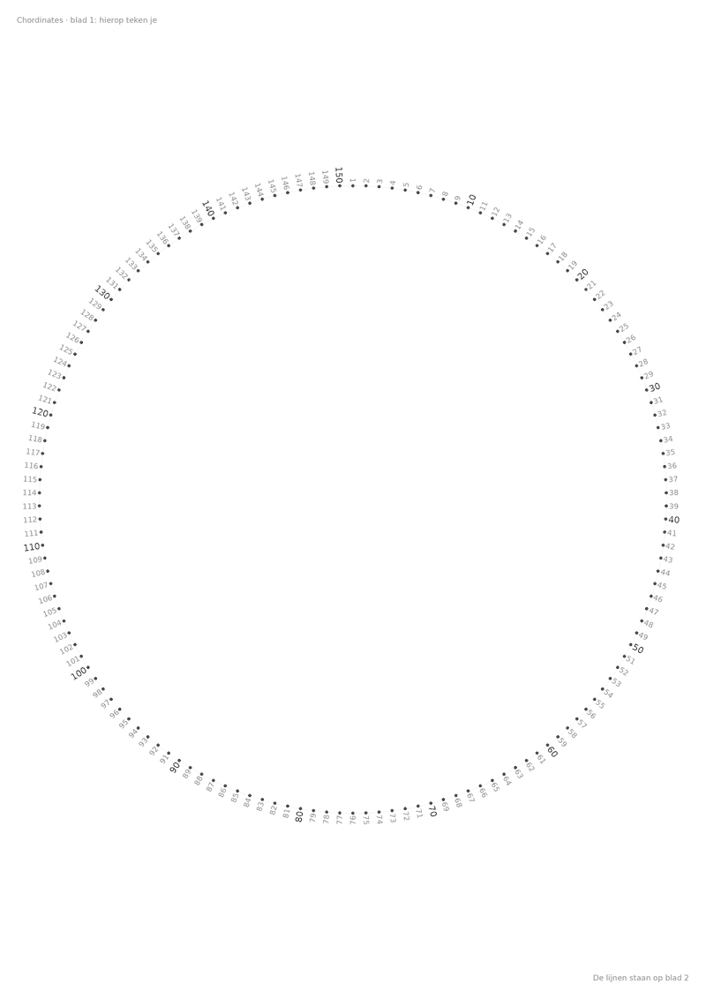
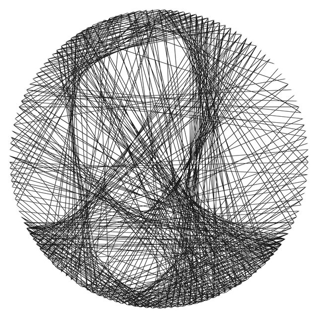

Teken Je Eigen Foto
Upload een foto en mijn algoritmes maken er een tekenpuzzel van: honderden rechte lijnen tussen genummerde punten, stippen om in te vullen of een mozaïek van vormen. Print het, pak een liniaal en een stift, en zie je foto lijn voor lijn verschijnen.
Gratis, zonder account, en je foto wordt niet bewaard.


Kies Je Puzzel


Altijd In Ontwikkeling
KUNSD is mijn hobbyproject en groeit stap voor stap. Elk algoritme begint als een experiment op mijn laptop; de beste komen hier terecht als tekenpuzzel, zodat jij ze ook kunt natekenen. Er komen dus regelmatig nieuwe puzzels bij, en bestaande worden slimmer.
Werkt iets niet zoals je verwacht, of heb je een idee voor een nieuwe bewerking? Dan hoor ik dat graag via de contactpagina.